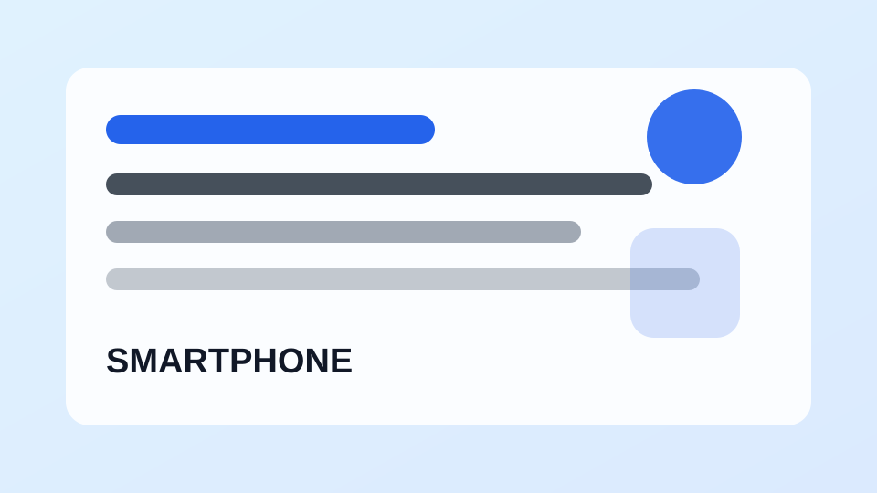

스마트폰 사용법스마트폰 저장공간 부족할 때 먼저 확인할 7가지
사진, 동영상, 앱 캐시, 메신저 파일을 순서대로 점검하는 방법입니다.
스마트폰, 앱 설정, 계정 보안, 백업과 생활 체크리스트를 쉽게 정리하는 디지털 생활 가이드
휴대폰 기본 기능과 문제 해결 방법을 쉽게 정리합니다.

스마트폰 사용법사진, 동영상, 앱 캐시, 메신저 파일을 순서대로 점검하는 방법입니다.
배터리 사용량과 화면 밝기, 백그라운드 실행 앱을 점검합니다.
재부팅, 저장공간, 앱 업데이트처럼 먼저 확인할 항목을 정리했습니다.
공유기, 거리, 주파수 대역, 기기 설정을 순서대로 살펴봅니다.
기기 변경 직후 보안, 백업, 알림, 결제 설정을 점검합니다.
필요한 알림과 불필요한 알림을 구분해 집중도를 높입니다.
사용 시간 통계와 앱 제한 기능을 활용하는 방법입니다.
자동 재생, 백그라운드 데이터, 업데이트 설정을 확인합니다.